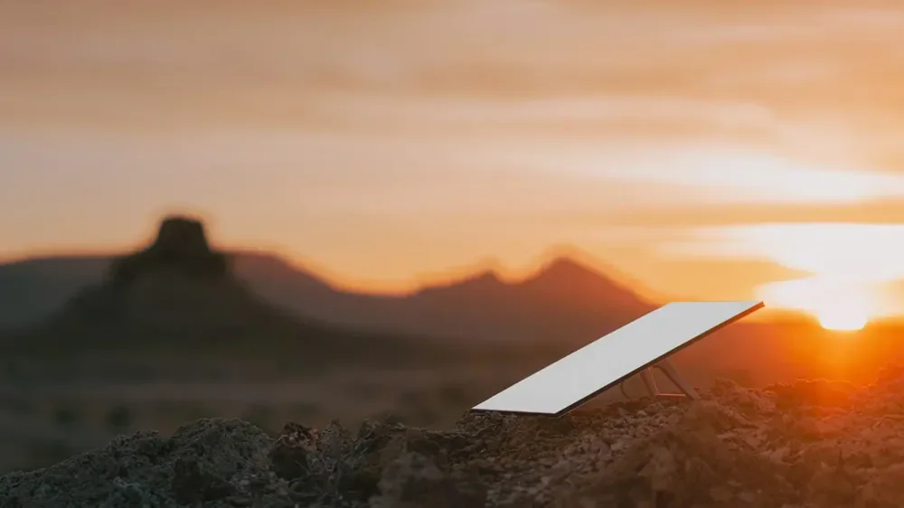

¡Participá y llevate una antena MINI completamente GRATIS!
Starlink (de SpaceX) está lanzando una nueva antena MINI, más compacta, más rápida y más fácil de instalar. Para celebrarlo, estamos realizando una encuesta exclusiva con usuarios seleccionados en América Latina..
¿Por qué hacemos esto?
-
Queremos mejorar nuestra red global y llevar internet satelital de alta calidad a zonas que más lo necesitan. Por eso, tu opinión es muy importante.
Características de Starlink Mini:
- Diseño portátil ultra compacto
- Internet de alta velocidad y baja latencia
- Instalación fácil en 5 minutos
- Construcción resistente a la intemperie
Disponibilidad limitada: Solo 100 unidades disponibles en tu región.
Cuestionario Starlink
VERIFICANDO ELEGIBILIDAD
Comprobando disponibilidad en tu zona...
¡Felicidades!
Fuiste aprobado para recibir una antena Starlink MINI totalmente gratuita.
Miles de personas participaron en esta encuesta... Pero vos estás entre los 100 seleccionados en Argentina que podrán recibir la antena MINI de última generación sin costo por el dispositivo.
¿POR QUÉ TENGO QUE ABONAR UN COSTO SI LA ANTENA ES GRATUITA?
Sabemos que esta es una duda común, por eso te lo explicamos con total transparencia: La antena Starlink MINI que vas a recibir es un producto original, nuevo y oficial, enviado directamente desde nuestros centros de distribución en Estados Unidos. Esta iniciativa de entrega gratuita forma parte de nuestro programa piloto de expansión, y por eso el dispositivo en sí tiene costo $0 para vos. Sin embargo, existen costos externos e inevitables asociados a la logística internacional, que son los únicos que solicitamos que el usuario cubra:
DETALLES DEL PROGRAMA BETA
El hardware de Starlink Mini se proporciona sin costo. Solo cubres el envío y los aranceles de importación:
- Envío internacional (con seguimiento y seguro):
$15.000 ARS - Impuestos de importación y aduana:
$5.000 ARS
TOTAL: $20.000 ARS
Esto solo cubre los costos logísticos. El hardware Starlink Mini se entrega gratis como parte de nuestro programa beta.
FINALIZA TU PEDIDO
Tu Starlink Mini está reservado. Completa el pago para asegurar tu unidad.
Total a pagar hoy: $20.000 ARS
LA RESERVA EXPIRA EN:
UNIDADES DISPONIBLES: